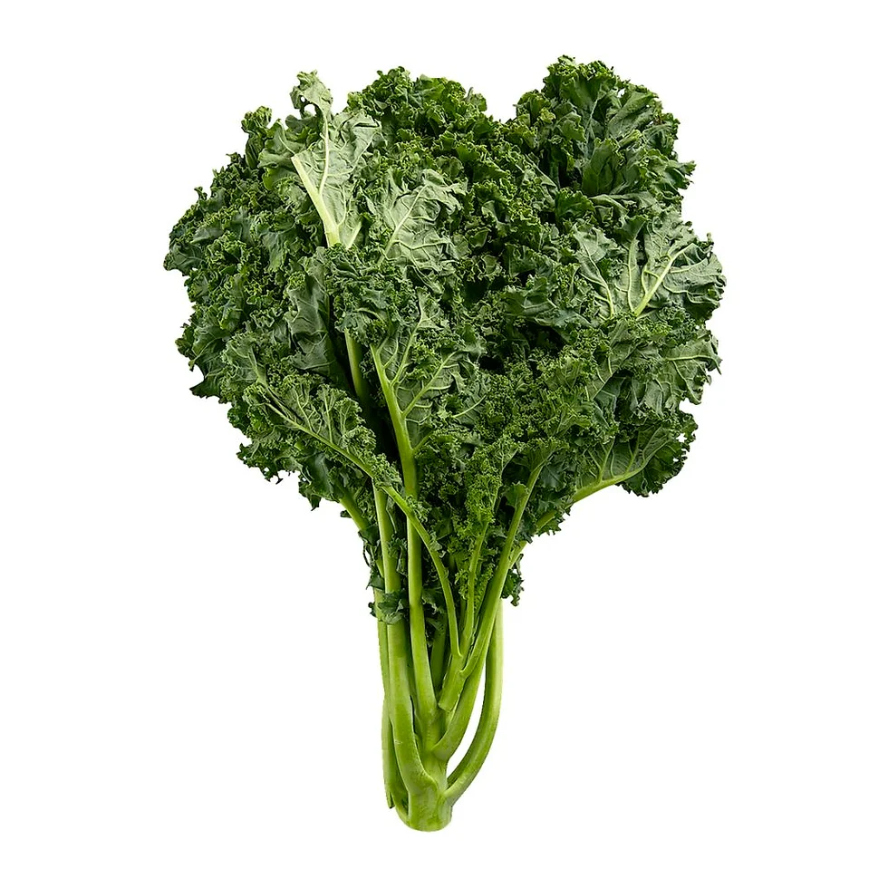

1. Seasons for Growing Mustard Greens

Mustard greens are a cool-season crop that thrives in moderate temperatures. Here's how to manage their growing seasons:
- Spring: Ideal for planting mustard greens as they grow best in cool weather. Sow seeds outdoors 2-4 weeks before the last frost date.
- Fall: Mustard greens can be grown in fall for a late harvest. Sow seeds 6-8 weeks before the first expected frost.